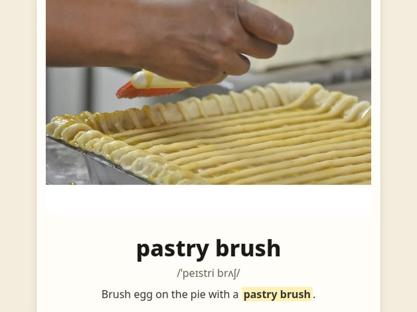

Grand TourItinéraires et destinationsSéquences prêtes à l'emploi · Français, anglais · Tous niveaux

What is this called? Le jeu de vocabulaire de la cuisine.
Lycée professionnel · CFA · CAP Cuisine
Kitchen and Everyday Life: Two Speaking Games
Un cuisinier ne passe pas sa journée qu’en cuisine. Le matin, il prend le train, il fait ses courses, il commande un café, il appelle son maître de stage. Le soir, il nomme sans hésiter la mandoline, le slotted spoon ou le proofing basket. Un enseignement professionnel s’accompagne toujours de situations de la vie quotidienne : c’est pourquoi je vous propose ce duo.
In Context
Name, prepare, ask
Present a simple preparation in one minute and ask what each tool is called.
l’anglais du métier
Jeu 1 · le vocabulaire de la cuisine
What is this called?
Une photo, la question « What is this called? », un compte à rebours 3-2-1, puis le mot, sa prononciation et une phrase d’exemple. L’élève apprend le mot juste, celui du métier.
15 thèmes CFA · CAP Cuisine en tête : pains, poissons et fruits de mer, ustensiles de cuisine, boulangerie et pâtisserie, arts de la table, petit-déjeuner anglais…
Ces deux exercices sont très différents, mais ils développent les deux pôles de compétences : l’anglais du métier et l’anglais de la vie.
l’anglais du métierl’anglais de la vie
Sans inscription, sans note : chacun avance à son rythme, sur ordinateur, tablette ou téléphone.
Spirale de Gorse, version courte
En CAP, et de même en SEGPA s'il y a lieu, on s'arrête à quatre tours, sans le tour « J'anticipe ». Méthode conçue par Madame Carole Paoli Pompougnac. Le nom rend hommage à sa grand-mère par alliance, Madame Armandine Gorse, avec un S. On gravit un texte, un audio ou une image comme une pente : on part de ce qui saute aux yeux, puis l'attention se resserre, jusqu'au sens que l'on peut défendre.
Chaque version courte comporte un exemple travaillé : pour chaque tour, la question du professeur, la réponse attendue, et ce qui se resserre. Les réponses détaillées restent en Teacher version.
Spirale de Gorse, version courte, quatre tours. Méthode conçue par Madame Carole Paoli Pompougnac.
1
Je remarque (I notice)
Qu'est-ce qui saute aux yeux ?
I notice… / I can see… / I hear…
2
Je repère (I spot)
Un détail plus net : un mot, un geste, un fait.
I spot… / The important word is…
3
Je comprends (I understand)
Que me permettent de comprendre ces éléments ?
This shows that…
4
Je trouve le sens (I find the meaning)
L'essentiel, en une phrase, et sa limite.
The point is… / I keep to the text: … / I stay focused on… / Beyond this, other questions may arise and open up further exploration.
Spirale de Gorse, version courte
En CAP, et de même en SEGPA s'il y a lieu, on s'arrête à quatre tours, sans le tour « J'anticipe ». Méthode conçue par Madame Carole Paoli Pompougnac. Le nom rend hommage à sa grand-mère par alliance, Madame Armandine Gorse, avec un S. On gravit un texte, un audio ou une image comme une pente : on part de ce qui saute aux yeux, puis l'attention se resserre, jusqu'au sens que l'on peut défendre.
Chaque version courte comporte un exemple travaillé : pour chaque tour, la question du professeur, la réponse attendue, et ce qui se resserre. Les réponses détaillées restent en Teacher version.
Spirale de Gorse, version courte, quatre tours. Méthode conçue par Madame Carole Paoli Pompougnac.
1
Je remarque (I notice)
Qu'est-ce qui saute aux yeux ?
I notice… / I can see… / I hear…
2
Je repère (I spot)
Un détail plus net : un mot, un geste, un fait.
I spot… / The important word is…
3
Je comprends (I understand)
Que me permettent de comprendre ces éléments ?
This shows that…
4
Je trouve le sens (I find the meaning)
L'essentiel, en une phrase, et sa limite.
The point is… / I keep to the text: … / I stay focused on… / Beyond this, other questions may arise and open up further exploration.
Lesson 1. What is this called? Kitchen tools
Minutage, Teacher version
Minutes
Étape
Ce que font les élèves
Activité
0 à 4
Home
Lecture du texte d'ouverture. Observation de deux photos d'ustensiles.
CE
4 à 14
Spirale de Gorse
Quatre tours, avec l'exemple travaillé, sur une photo d'ustensile.
CE, PO
14 à 26
Listening
Jeu What is this called? : écouter le mot, sa prononciation, la phrase d'exemple (thème ustensiles).
Nommer cinq objets à l'oral, puis écrire cinq phrases : This is a… I use it to…
PO, PE
48 à 52
Lesson summary and homework
Recopiage, consigne.
PE
52 à 55
Marge
Rangement, sortie de la salle. La lesson dure 55 minutes, minutée sur 52.
Exemple travaillé, Teacher version
Exemple travaillé, Lesson 1, sur une photo d'ustensile (par exemple une passoire), Teacher version
Pour chaque tour : la question du professeur, la réponse attendue, et ce qui se resserre.
Tour
Question du professeur
Réponse attendue
Ce qui se resserre
1. Je remarque (I notice)
Qu'est-ce qui saute aux yeux sur cette photo ? Regardez d'abord, sans chercher le mot.
C'est un objet de cuisine, en métal, avec des trous.
On part de ce que l'on voit, pas encore du mot anglais.
2. Je repère (I spot)
Quel détail plus net voyez-vous ? À quoi sert cet objet, dans le geste ?
On y verse des légumes ou des pâtes pour enlever l'eau. Le mot est colander, une passoire.
L'objet n'est plus « un truc en métal » : il a un geste et un nom.
3. Je comprends (I understand)
Que vous apprend ce mot, au poste ?
Si l'on demande « What is this called? », il faut le mot juste, celui du métier, et une phrase : I use a colander to drain the pasta.
Le critère se resserre : le nom exact, et l'usage.
4. Je trouve le sens (I find the meaning)
Quelle phrase pouvez-vous défendre, et quelle est sa limite ?
Au poste, le bon mot évite une erreur et fait gagner du temps. Limite : connaître le mot ne suffit pas si l'on ne sait pas le dire assez clairement pour être compris.
Une phrase défendable, prête pour l'oral et pour la
Homework : Learn ten utensil words. Write five sentences: This is a… I use it to…
trace écrite. |
Lesson summary : « What is this called? This is a colander. I use it to drain the pasta. The right word is the word of the job. »
Plan B, Teacher version
Plan B : les cinq phrases écrites se terminent au homework ; cinq mots oraux, la spirale et la trace restent en classe.
Spirale de Gorse, version courte
En CAP, et de même en SEGPA s'il y a lieu, on s'arrête à quatre tours, sans le tour « J'anticipe ». Méthode conçue par Madame Carole Paoli Pompougnac. Le nom rend hommage à sa grand-mère par alliance, Madame Armandine Gorse, avec un S. On gravit un texte, un audio ou une image comme une pente : on part de ce qui saute aux yeux, puis l'attention se resserre, jusqu'au sens que l'on peut défendre.
Chaque version courte comporte un exemple travaillé : pour chaque tour, la question du professeur, la réponse attendue, et ce qui se resserre. Les réponses détaillées restent en Teacher version.
Spirale de Gorse, version courte, quatre tours. Méthode conçue par Madame Carole Paoli Pompougnac.
1
Je remarque (I notice)
Qu'est-ce qui saute aux yeux ?
I notice… / I can see… / I hear…
2
Je repère (I spot)
Un détail plus net : un mot, un geste, un fait.
I spot… / The important word is…
3
Je comprends (I understand)
Que me permettent de comprendre ces éléments ?
This shows that…
4
Je trouve le sens (I find the meaning)
L'essentiel, en une phrase, et sa limite.
The point is… / I keep to the text: … / I stay focused on… / Beyond this, other questions may arise and open up further exploration.
Lesson 2. Expanding your vocabulary: from the kitchen to the table
Minutage, Teacher version
Minutes
Étape
Ce que font les élèves
Activité
0 à 4
Relance
Rappeler cinq ustensiles de la Lesson 1.
PO
4 à 14
Spirale de Gorse
Quatre tours, avec l'exemple travaillé, sur une photo ou une phrase d'exemple du jeu (pain, poisson, pâtisserie, arts de la table, ou petit-déjeuner anglais).
CE, PO
14 à 28
Listening
Jeu What is this called?, un ou deux thèmes du jour. Écouter, répéter, écrire le mot.
CO, PE
28 à 38
Expanding your vocabulary
Classer les mots : pains ; poissons et fruits de mer ; boulangerie et pâtisserie ; arts de la table ; petit-déjeuner anglais.
PE, PO
38 à 48
Production
Présenter oralement un petit-déjeuner anglais ou un plat, puis l'écrire en six phrases.
PO, PE
48 à 52
Lesson summary and homework
Recopiage, consigne.
PE
52 à 55
Marge
Rangement, sortie de la salle. La lesson dure 55 minutes, minutée sur 52.
Exemple travaillé, Teacher version
Exemple travaillé, Lesson 2, sur une photo ou une phrase du petit-déjeuner anglais (Teacher version)
Tour
Question du professeur
Réponse attendue
Ce qui se resserre
1. Je remarque (I notice)
Qu'est-ce qui saute aux yeux ? Que voyez-vous dans l'assiette ou sur la photo ?
Un petit-déjeuner copieux : œufs, bacon, peut-être des beans, du toast, du thé.
On part de l'assiette, d'une image familière, pas d'une liste.
2. Je repère (I spot)
Quels mots exacts faut-il retenir ? Donnez-en au moins quatre.
Eggs, bacon, baked beans, toast, tea, fried tomato. Le mot breakfast dit le moment.
Les mots du thème remplacent « des choses à manger le matin ».
3. Je comprends (I understand)
Que vous apprennent ces mots, pour le métier et pour la vie ?
À table comme en cuisine, il faut nommer juste, pour prendre une commande ou pour commander soi-même.
Le même lexique sert au poste et dans la vie quotidienne.
4. Je trouve le sens (I find the meaning)
Quelle phrase pouvez-vous défendre, et quelle est sa limite ?
Savoir nommer un petit-déjeuner anglais, c'est déjà pouvoir le préparer, le servir ou le commander. Limite : une liste de mots ne remplace pas une phrase pour le client ou pour le serveur.
On arrive à une phrase utile, avec sa limite.
Homework : Learn twelve words from two themes of the game. Write a six-line presentation of an English breakfast or of a dish.
Lesson summary : « An English breakfast can have eggs, bacon, baked beans, toast and tea. I can name the food, and I can say it in a sentence. »
Plan B, Teacher version
Plan B : la présentation écrite se termine au homework ; un thème oral, la spirale et la trace restent en classe.
Spirale de Gorse, version courte
En CAP, et de même en SEGPA s'il y a lieu, on s'arrête à quatre tours, sans le tour « J'anticipe ». Méthode conçue par Madame Carole Paoli Pompougnac. Le nom rend hommage à sa grand-mère par alliance, Madame Armandine Gorse, avec un S. On gravit un texte, un audio ou une image comme une pente : on part de ce qui saute aux yeux, puis l'attention se resserre, jusqu'au sens que l'on peut défendre.
Chaque version courte comporte un exemple travaillé : pour chaque tour, la question du professeur, la réponse attendue, et ce qui se resserre. Les réponses détaillées restent en Teacher version.
Spirale de Gorse, version courte, quatre tours. Méthode conçue par Madame Carole Paoli Pompougnac.
1
Je remarque (I notice)
Qu'est-ce qui saute aux yeux ?
I notice… / I can see… / I hear…
2
Je repère (I spot)
Un détail plus net : un mot, un geste, un fait.
I spot… / The important word is…
3
Je comprends (I understand)
Que me permettent de comprendre ces éléments ?
This shows that…
4
Je trouve le sens (I find the meaning)
L'essentiel, en une phrase, et sa limite.
The point is… / I keep to the text: … / I stay focused on… / Beyond this, other questions may arise and open up further exploration.
Lesson 3. A Day in London: the station and the shop
Minutage, Teacher version
Minutes
Étape
Ce que font les élèves
Activité
0 à 4
Home
Situer Leo et Amy : une journée à Londres, la gare, puis un magasin ou un supermarché.
CE, PO
4 à 14
Spirale de Gorse
Quatre tours, avec l'exemple travaillé, sur l'épisode vidéo de la gare ou du magasin.
Ticket, train, platform, please, how much, thank you. Peut-être : A single to… / Return, please.
Quelques mots utiles remplacent le brouhaha de la gare.
3. Je comprends (I understand)
Que permettent de faire ces formules ?
Acheter un ticket, demander le quai, payer, remercier : se débrouiller pour aller quelque part.
Le critère se resserre : se débrouiller, pas tout comprendre.
4. Je trouve le sens (I find the meaning)
Quelle phrase pouvez-vous défendre, et quelle est sa limite ?
Avec quelques phrases claires, on peut prendre le train. Limite : si l'on n'a pas compris le quai ou le prix, il faut oser demander : Can you repeat, please?
Une phrase défendable, et un geste de secours (redemander).
Homework : Learn ten travel or shop words. Write the six-line dialogue again, changing the destination or the product.
Lesson summary : « A single to…, please. How much is it? Can you repeat, please? I need help. Thank you. »
Plan B, Teacher version
Plan B : le dialogue écrit se termine au homework ; l'écoute, deux formules orales, la spirale et la trace restent en classe.
Spirale de Gorse, version courte
En CAP, et de même en SEGPA s'il y a lieu, on s'arrête à quatre tours, sans le tour « J'anticipe ». Méthode conçue par Madame Carole Paoli Pompougnac. Le nom rend hommage à sa grand-mère par alliance, Madame Armandine Gorse, avec un S. On gravit un texte, un audio ou une image comme une pente : on part de ce qui saute aux yeux, puis l'attention se resserre, jusqu'au sens que l'on peut défendre.
Chaque version courte comporte un exemple travaillé : pour chaque tour, la question du professeur, la réponse attendue, et ce qui se resserre. Les réponses détaillées restent en Teacher version.
Spirale de Gorse, version courte, quatre tours. Méthode conçue par Madame Carole Paoli Pompougnac.
1
Je remarque (I notice)
Qu'est-ce qui saute aux yeux ?
I notice… / I can see… / I hear…
2
Je repère (I spot)
Un détail plus net : un mot, un geste, un fait.
I spot… / The important word is…
3
Je comprends (I understand)
Que me permettent de comprendre ces éléments ?
This shows that…
4
Je trouve le sens (I find the meaning)
L'essentiel, en une phrase, et sa limite.
The point is… / I keep to the text: … / I stay focused on… / Beyond this, other questions may arise and open up further exploration.
Lesson 4. A Day in London: the café and asking for help
Minutage, Teacher version
Minutes
Étape
Ce que font les élèves
Activité
0 à 4
Relance
Quelles formules de la gare peut-on réemployer dans un café ?
PO
4 à 14
Spirale de Gorse
Quatre tours, avec l'exemple travaillé, sur l'épisode du café, de la pharmacie, ou de l'entreprise d'accueil.
CO, CE
14 à 28
Listening
Épisode existant : écouter deux fois, répéter la commande ou la demande d'aide.
CO, PO
28 à 38
Reading
Lire le petit dialogue de la mission, répondre à quatre questions.
CE
38 à 48
Production
Commander un café, ou demander de l'aide (pharmacie, accueil). Écrire puis jouer le dialogue.
PE, PO
48 à 52
Lesson summary and homework
Recopiage, consigne.
PE
52 à 55
Marge
Rangement, sortie de la salle. La lesson dure 55 minutes, minutée sur 52.
Exemple travaillé, Teacher version
Exemple travaillé, Lesson 4, sur l'épisode du café (Teacher version)
Tour
Question du professeur
Réponse attendue
Ce qui se resserre
1. Je remarque (I notice)
Qu'est-ce qui saute aux yeux, ou aux oreilles, dans cet épisode ?
On entre dans un café. Quelqu'un veut commander, et il faut parler.
On part de la situation, pas d'une liste de boissons.
2. Je repère (I spot)
Quelles formules entendez-vous ? Donnez-en au moins trois.
Can I have a tea, please? / I'd like a coffee. / How much is it? / Have you got a table? / I need help.
Trois ou quatre phrases utiles apparaissent, déjà plus nettes.
3. Je comprends (I understand)
Que vous apprennent ces formules, pour la journée à Londres et pour le métier ?
On commande comme un client, et l'on comprend aussi un client qui commande, si l'on travaille au service.
Le même anglais sert des deux côtés du comptoir.
4. Je trouve le sens (I find the meaning)
Quelle phrase pouvez-vous défendre, et quelle est sa limite ?
Savoir commander et demander de l'aide, c'est déjà vivre et travailler en anglais. Limite : une commande trop longue, ou trop rapide, ne passe pas ; une phrase courte et polie suffit.
Une phrase défendable, prête pour le dialogue et pour l'oral de six minutes.
Homework : Learn eight café or help phrases. Write a six-line dialogue in a café or in a pharmacy. If the mission shows the workplace, write what you would say to your tutor in the host company (six lines), without inventing a period that is not in the game.
Lesson summary : « Can I have a tea, please? I'd like a coffee. How much is it? I need help. Can you repeat, please? »
Plan B, Teacher version
Plan B : le dialogue écrit se termine au homework ; la commande orale, la spirale et la trace restent en classe.
Spirale de Gorse, version courte
En CAP, et de même en SEGPA s'il y a lieu, on s'arrête à quatre tours, sans le tour « J'anticipe ». Méthode conçue par Madame Carole Paoli Pompougnac. Le nom rend hommage à sa grand-mère par alliance, Madame Armandine Gorse, avec un S. On gravit un texte, un audio ou une image comme une pente : on part de ce qui saute aux yeux, puis l'attention se resserre, jusqu'au sens que l'on peut défendre.
Chaque version courte comporte un exemple travaillé : pour chaque tour, la question du professeur, la réponse attendue, et ce qui se resserre. Les réponses détaillées restent en Teacher version.
Spirale de Gorse, version courte, quatre tours. Méthode conçue par Madame Carole Paoli Pompougnac.
1
Je remarque (I notice)
Qu'est-ce qui saute aux yeux ?
I notice… / I can see… / I hear…
2
Je repère (I spot)
Un détail plus net : un mot, un geste, un fait.
I spot… / The important word is…
3
Je comprends (I understand)
Que me permettent de comprendre ces éléments ?
This shows that…
4
Je trouve le sens (I find the meaning)
L'essentiel, en une phrase, et sa limite.
The point is… / I keep to the text: … / I stay focused on… / Beyond this, other questions may arise and open up further exploration.
Lesson 5. The job and everyday life
Minutage, Teacher version
Minutes
Étape
Ce que font les élèves
Activité
0 à 4
Le duo
Relire le texte d'ouverture : l'anglais du métier et l'anglais de la vie.
CE
4 à 14
Spirale de Gorse
Quatre tours, avec l'exemple travaillé, sur le texte d'ouverture.
CE, PO
14 à 24
Listening
Réécoute d'un mot du jeu 1 et d'une réplique du jeu 2 ; dire en quoi ils se ressemblent (une phrase claire, un besoin précis).
CO, PO
24 à 36
Speaking
Présenter, en une à deux minutes, un objet du métier et une situation de la vie (le train, le café, le magasin).
PO
36 à 48
Writing
Écrire 60 à 80 mots : le matin avant le travail, puis un geste en cuisine, avec des mots des deux jeux.
PE
48 à 52
Lesson summary and homework
Recopiage, consigne. Autoévaluation simple : je nomme, je demande, je me débrouille.
PE
52 à 55
Marge
Rangement, sortie de la salle. La lesson dure 55 minutes, minutée sur 52.
Exemple travaillé, Teacher version
Exemple travaillé, Lesson 5, sur le texte d'ouverture (Teacher version)
Tour
Question du professeur
Réponse attendue
Ce qui se resserre
1. Je remarque (I notice)
Qu'est-ce qui saute aux yeux dans ce texte ? Lisez la première phrase à voix haute.
Un cuisinier ne passe pas sa journée qu'en cuisine. Le matin, il prend le train, il fait ses courses, il commande un café, il appelle son tuteur en entreprise.
On quitte l'idée que l'anglais du CAP, c'est seulement la cuisine.
2. Je repère (I spot)
Quels exemples le texte donne-t-il ensuite, pour le soir et pour le métier ?
Le soir, il nomme sans hésiter la mandoline, le slotted spoon, le proofing basket. Deux pôles : le métier, et la vie.
Des mots précis du poste s'ajoutent aux gestes de la journée.
3. Je comprends (I understand)
Que vous apprend ce duo ?
Il faut l'anglais pour travailler, et l'anglais pour se débrouiller dans la ville. Les deux jeux ne font pas le même travail, mais ils se complètent.
Le critère se resserre : deux compétences, un même élève.
4. Je trouve le sens (I find the meaning)
Quelle phrase pouvez-vous défendre, et quelle est sa limite ?
Savoir nommer un ustensile et savoir demander un ticket, c'est déjà parler anglais au bon moment. Limite : l'un ne remplace pas l'autre ; un bon mot de cuisine ne suffit pas à la gare, et l'inverse non plus.
Une phrase défendable, avec sa limite, prête pour l'écrit de 60 à 80 mots et pour l'oral de six minutes.
Homework : Finish the 60 to 80 word text. Learn ten words, five from the job and five from everyday life.
Lesson summary : « I need English at work, and I need English in everyday life. I can name a tool, and I can ask for a ticket or a tea. One does not replace the other. »
Plan B, Teacher version
Plan B : l'écrit se termine au homework ; la présentation orale courte, la spirale et la trace restent en classe.
If a student cannot attend class or is in hospital
À placer dans un onglet à part, visible par l'élève. Chaque lesson se fait en 30 à 40 minutes, seul, avec la page de la séquence ouverte (documents en libre accès). Une version courte de 15 minutes est prévue pour les jours de fatigue. Le travail se dépose sur l'ENT ou se rend au retour. L'enseignante corrige et renvoie un mot.
Règle pour l'élève : « Fais ce que tu peux, dans l'ordre. Si tu es fatigué, fais seulement la version courte. Rien n'est perdu : on rattrape ensemble au retour. »
Lesson 1. What is this called? Kitchen tools
Je découvre (5 min). Lis le texte d'ouverture et ouvre le jeu What is this called?, thème ustensiles.
Je comprends (10 min). Pour cinq photos : What is this called? À quoi sert l'objet ?
Étude de la langue (10 min). Écris dix mots d'ustensiles.
Je produis (10 min). Écris cinq phrases : This is a… I use it to…
Ma trace écrite (5 min). Recopie la trace écrite de la Lesson 1.
Version courte (15 min) : cinq mots et deux phrases.
Lesson 2. Expanding your vocabulary
Je découvre (5 min). Ouvre un thème du jeu (petit-déjeuner, pains, ou poissons).
Je comprends (10 min). Écoute cinq mots, écris-les.
Étude de la langue (10 min). Classe douze mots en deux colonnes.
Je produis (10 min). Présente un petit-déjeuner anglais en six phrases.
Ma trace écrite (5 min). Recopie la trace écrite de la Lesson 2.
Version courte (15 min) : cinq mots et trois phrases.
Lesson 3. The station and the shop
Je découvre (5 min). Ouvre A Day in London, mission gare ou magasin.
Je comprends (10 min). Écoute l'épisode deux fois. Where are they? What do they want?
Étude de la langue (10 min). Recopie huit formules utiles.
Je produis (10 min). Écris un dialogue de six répliques (ticket ou caisse).
Ma trace écrite (5 min). Recopie la trace écrite de la Lesson 3.
Version courte (15 min) : l'épisode et trois formules.
Lesson 4. The café and asking for help
Je découvre (5 min). Ouvre la mission café, pharmacie, ou entreprise d'accueil.
Je comprends (10 min). What do they order or ask? Which phrases do you hear?
Étude de la langue (10 min). Recopie huit formules (commande ou aide).
Je produis (10 min). Écris un dialogue de six répliques.
Ma trace écrite (5 min). Recopie la trace écrite de la Lesson 4.
Version courte (15 min) : l'épisode et la commande.
Lesson 5. The job and everyday life
Je découvre (5 min). Relis le texte d'ouverture.
Je comprends (10 min). Quels exemples pour la vie ? Quels exemples pour le métier ?
Étude de la langue (10 min). Relis tes traces écrites. Liste cinq mots du métier et cinq mots de la vie.
Je produis (10 min). Écris 60 à 80 mots : un matin, puis un geste en cuisine.
Ma trace écrite (5 min). Recopie la trace écrite de la Lesson 5.
Version courte (15 min) : le texte d'ouverture et un paragraphe de 40 mots.
Évaluation au format de l'épreuve ponctuelle du CAP (Teacher version)
À insérer uniquement en Teacher version. Lorsque le règlement de la spécialité prévoit la langue vivante : coefficient 1, niveau A2, note sur 20. Cinq activités comptent chacune pour un cinquième : compréhension de l'oral, compréhension de l'écrit, expression écrite, expression orale en continu, interaction. Élèves des établissements publics ou privés sous contrat et apprentis des CFA habilités : CCF. Autres candidats : épreuve ponctuelle (un écrit d'une heure et un oral de six minutes, mêmes activités, séparés par une pause d'au moins quinze minutes).
Situation A (CCF, 1 h, sans préparation, ou écrit de l'épreuve ponctuelle) : compréhension de l'oral, 10 min (document d'une minute au plus, trois écoutes, questionnaire à choix multiple en français) ; compréhension de l'écrit, 25 min (document de dix lignes au plus, réponses en français) ; expression écrite, 25 min (un sujet au choix entre deux, vie quotidienne ou vie professionnelle, 60 à 80 mots au moins).
Situation B (CCF, 6 min, ou oral de l'épreuve ponctuelle) : trois minutes de prise de parole en continu, puis trois minutes d'interaction. Le candidat présente un travail, un projet, un produit, un service ou une expérience professionnelle ; il peut s'aider d'un plan, de mots-clés, d'une image, mais ne lit pas un texte.
Situation A, en une lesson de 52 minutes (Teacher version)
Minutes
Étape
Ce que font les élèves
Activité
0 à 2
Consignes
Lecture des trois parties, choix du sujet d'écriture.
Lecture
2 à 12
Listening
Trois écoutes (1 min au plus), une minute entre les écoutes ; QCM en français.
CO
12 à 37
Reading
Texte de dix lignes au plus, réponses en français.
CE
37 à 50
Expression écrite
Un sujet au choix, 60 à 80 mots au moins.
PE
50 à 52
Ramassage
Relecture, comptage des mots.
52 à 55
Marge
Rangement. La lesson dure 55 minutes, minutée sur 52.
Listening, CO
Transcript (Teacher version seulement)
> Good morning, can I help you? I'd like a coffee and a sandwich, please. Eat in or take away? Eat in, please. That's six pounds fifty. Card or cash? Card, please. Here's your receipt. The cups are on the right, and spoons are next to the sugar. Thank you. Have a nice day.
Consigne : questionnaire à choix multiple, en français, après trois écoutes.
Où se passe la scène ? a) une gare b) un café c) une cuisine
Que commande la personne ? a) un thé et un gâteau b) un café et un sandwich c) seulement un café
Où consomme-t-elle ? a) sur place b) à emporter c) on ne sait pas
Combien paie-t-elle, et comment ? a) 6,50 livres, en espèces b) 5 livres, par carte c) 6,50 livres, par carte
Où sont les cuillères ? a) à gauche b) à côté du sucre c) sous le comptoir
Corrigé (Teacher version). 1 b ; 2 b ; 3 a ; 4 c ; 5 b.
Reading, CE
Texte d'entraînement (dix lignes au plus) :
> A cook does not spend the whole day in the kitchen. In the morning, he takes the train, buys food, orders a coffee, and calls his tutor at the host company. In the kitchen, he must name tools correctly: a mandoline, a slotted spoon, a proofing basket, a colander. English is useful at work, and it is useful in everyday life. The two are different, but they help each other. If you can ask for a ticket and you can name a tool, you can already say what you need, clearly.
Source : texte d'entraînement écrit pour la classe, d'après le texte d'ouverture de la séquence.
Questions, réponses en français :
Que fait le cuisinier le matin, avant la cuisine ?
Quels ustensiles le texte nomme-t-il ?
Pourquoi l'anglais est-il utile, selon le texte ?
Quelle est la différence entre les deux pôles, et ce qui les relie ?
Quelle phrase finale résume ce que l'élève peut déjà faire ?
Corrigé (Teacher version). Le matin, il prend le train, fait des courses, commande un café, appelle son tuteur en entreprise. Le texte nomme une mandoline, une cuillère trouée, un panier de fermentation, une passoire. L'anglais sert au travail et dans la vie quotidienne. Les deux sont différents, mais ils s'aident. Si l'on sait demander un ticket et nommer un ustensile, on peut déjà dire clairement ce dont on a besoin.
Expression écrite, PE
Choisissez un sujet. Écrivez 60 à 80 mots au moins.
Sujet 1, vie quotidienne : You are in London. Write what you say at the station and at a café.
Sujet 2, vie professionnelle : Present five kitchen tools. Name them and say what you use them for.
Éléments de corrigé (Teacher version). Phrases courtes et polies ; lexique de la séquence (ticket, platform, tea, coffee, colander, whisk, saucepan). 60 à 80 mots au moins. On n'attend pas un récit long.
Situation B, 6 minutes par élève, PO (continu et interaction)
Minutes
Étape
Activité
0 à 3
Overview
L'élève présente un ustensile, un petit-déjeuner, ou une situation de la journée à Londres, sans lire un texte.
PO
3 à 6
Interaction
Questions de l'enseignante.
PO
Consigne : présentez, en trois minutes au plus, un objet du métier ou une situation de la vie (la gare, le café, le magasin). Une fiche de mots-clés et une image (photo du jeu, un ticket, une table dressée) sont autorisées.
Questions d'interaction : What is this called? What do you use it for? How much is it? Can I have a tea, please? Can you repeat, please? Where is the platform?
Éléments de corrigé (Teacher version). Nom juste, une phrase d'usage, une formule polie. Niveau A2. L'élève ne lit pas un texte appris.
Grille CAP, niveau A2, Teacher version
Chaque activité sur 20, puis un cinquième de la note finale (note sur 20).
Activité
1 à 8
9 à 14
15 à 20
CO
Quelques mots isolés
Le lieu et le sujet sont reconnus, une ou deux informations justes
Les informations principales du dialogue sont justes
CE
Quelques éléments isolés
Le thème et deux ou trois faits
L'essentiel du texte, y compris les deux pôles (métier et vie)
PE
Hors sujet ou trop court
Sujet abordé, 60 mots, langue encore hésitante
Sujet traité, phrases lisibles, lexique du jeu ou de la ville
PO continu
Lecteur, propos très court
Présente avec aide
Présente sans lire, nomme et explique simplement
PO interaction
Répond peu ou à côté
Répond de façon simple
Répond et demande une précision, langue A2 compréhensible
Summative assessment
Même format que l'épreuve ponctuelle et que le CCF, à placer après la Lesson 5, en Teacher version. On reprend le format, avec d'autres documents.
Variante, compréhension de l'oral (transcript, Teacher version).
> What is this called? It's a whisk. I use it to mix eggs. And this? A chopping board. I cut vegetables on it, with a knife. Be careful, the knife is sharp. Can you pass me the colander, please? I need to drain the pasta. Thank you.
QCM : 1. Combien d'objets sont nommés ? a) deux b) trois c) au moins quatre (fouet, planche, couteau, passoire). 2. À quoi sert le fouet ? a) à couper b) à battre les œufs c) à égoutter. 3. Où coupe-t-on les légumes ? a) dans la casserole b) sur une planche, avec un couteau c) dans la passoire. 4. Que faut-il faire attention avec le couteau ? a) il est lourd b) il est tranchant c) il est sale. 5. Pourquoi demande-t-on la passoire ? a) pour égoutter les pâtes b) pour mélanger c) pour servir le café. Corrigé : 1 c ; 2 b ; 3 b ; 4 b ; 5 a.
Variante, compréhension de l'écrit. Texte : « Leo and Amy spend a day in London. They buy a ticket at the station, they go to a supermarket, they stop at a pharmacy, they order a drink in a café, and they go to the host company. Each time, they listen, they repeat, and they try to manage in English. They do not need a long speech. They need a clear question, a polite phrase, and the courage to ask: Can you repeat, please? » Questions en français sur le parcours de la journée, ce que font Leo et Amy à chaque fois, et ce dont ils ont besoin. Corrigé : gare, supermarché, pharmacie, café, entreprise d'accueil ; ils écoutent, répètent, se débrouillent ; pas un long discours, une question claire, une formule polie, et oser demander de répéter.
Variante, expression écrite. Sujet 1 : Write your day: the train, a coffee, and one tool you use in the kitchen. Sujet 2 : A classmate does not know the word "colander". Explain what it is and how you use it. 60 à 80 mots au moins.
L'oral sommatif reprend la Situation B, avec un autre objet ou une autre mission que ceux présentés en Lesson 5.